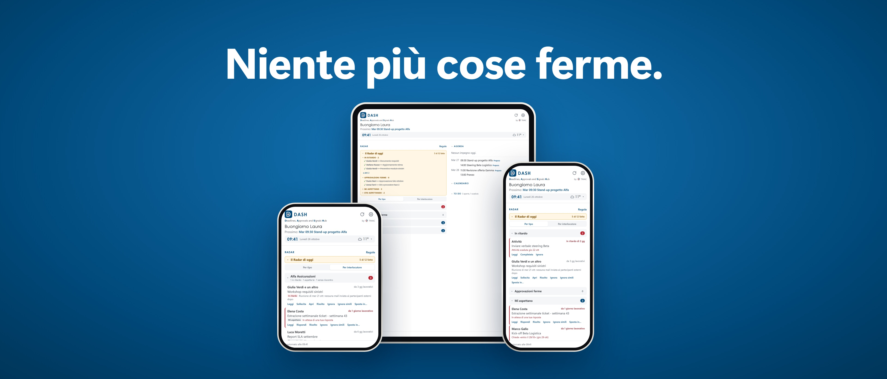
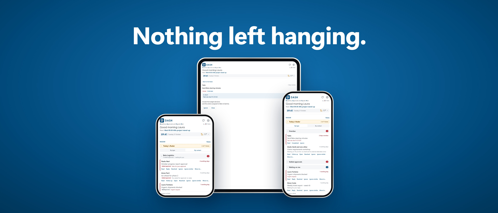
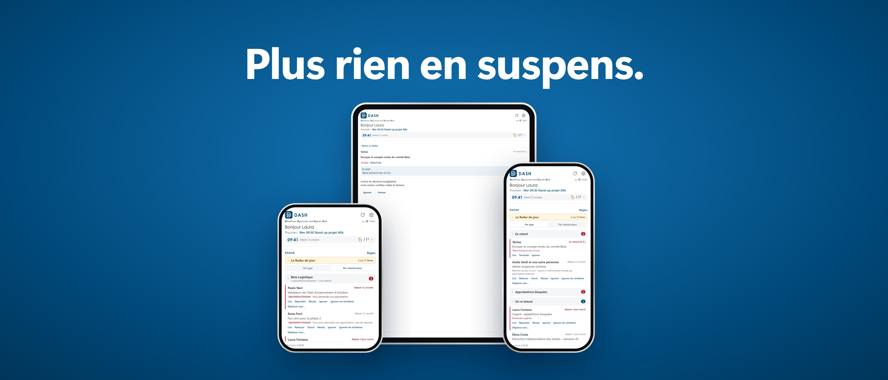
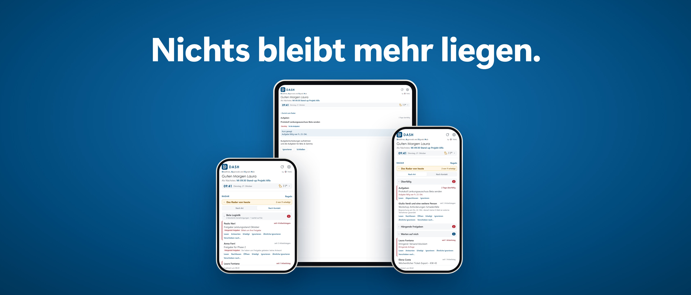

DASHDeadlines, Approvals and Signals Hub · by TMAC

Ogni mattina DASH ti dice cosa è in ritardo, quali approvazioni sono ferme, chi aspetta una tua risposta e
cosa stai aspettando dagli altri. Legge la posta, il calendario e le attività del tuo Microsoft 365: tu non inserisci niente.
TMAC S.r.l.s. – Via Legnano 27, 10128 Torino (TO) – P. IVA 13174990013
DASHDeadlines, Approvals and Signals Hub · by TMAC

Every morning DASH tells you what's overdue, which approvals have stalled, who is waiting for your reply
and what you're still waiting for from others. It reads the mail, calendar and tasks in your Microsoft 365 — you enter nothing.
DASHDeadlines, Approvals and Signals Hub · by TMAC

Chaque matin, DASH vous indique ce qui est en retard, quelles approbations sont bloquées, qui attend votre
réponse et ce que vous attendez encore des autres. Il lit la messagerie, le calendrier et les tâches de votre Microsoft 365 : vous n'avez rien à saisir.
DASHDeadlines, Approvals and Signals Hub · by TMAC

Jeden Morgen zeigt Ihnen DASH, was überfällig ist, welche Freigaben hängen, wer auf Ihre Antwort wartet und
worauf Sie selbst noch warten. Die App liest E-Mails, Kalender und Aufgaben aus Ihrem Microsoft 365 – Sie müssen nichts eingeben.
 DASHDeadlines, Approvals and Signals Hub · by TMAC
DASHDeadlines, Approvals and Signals Hub · by TMAC